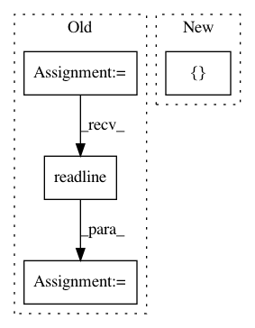

9a9778a6d9f4b2751a7ff5e0a2d4dcd7e6eee0a2,rnaseq/src/run_STAR.py,,,#,20
Before Change
else:
with open(args.fastq1) as f:
f.readline()
seq = f.readline().strip()
read_length = len(seq)
overhang = read_length-1
if read_length<=201:
starcmd="STAR"
else:
After Change
parser.add_argument("--outSAMattributes", default=["NH", "HI", "AS", "nM", "NM", "ch"], nargs="+")
parser.add_argument("--chimSegmentMin", default="15", help="Minimum chimeric segment length; switches on detection of chimeric (fusion) alignments")
parser.add_argument("--chimJunctionOverhangMin", default="15", help="Minimum overhang for a chimeric junction")
parser.add_argument("--chimOutType", default=["WithinBAM", "SoftClip"], nargs="+", help="")
parser.add_argument("--chimMainSegmentMultNmax", default="1", help="")
parser.add_argument("--genomeLoad", default="NoSharedMemory")
parser.add_argument("--STARlong", action="store_true", help="Use STARlong instead of STAR")
In pattern: SUPERPATTERN
Frequency: 3
Non-data size: 4
Instances
Project Name: broadinstitute/gtex-pipeline
Commit Name: 9a9778a6d9f4b2751a7ff5e0a2d4dcd7e6eee0a2
Time: 2017-04-11
Author: francois@broadinstitute.org
File Name: rnaseq/src/run_STAR.py
Class Name:
Method Name:
Project Name: pantsbuild/pants
Commit Name: 2649b5de8d60e813bc842c9bfe8b4e7b222c49ad
Time: 2021-03-12
Author: john.sirois@gmail.com
File Name: src/python/pants/backend/python/util_rules/pex_test.py
Class Name:
Method Name: create_pex_and_get_all_data
Project Name: QUANTAXIS/QUANTAXIS
Commit Name: 619499d6bacb220833b73731e550120af7bdee94
Time: 2017-03-23
Author: yutiansut@qq.com
File Name: analysis/python/example.py
Class Name:
Method Name: